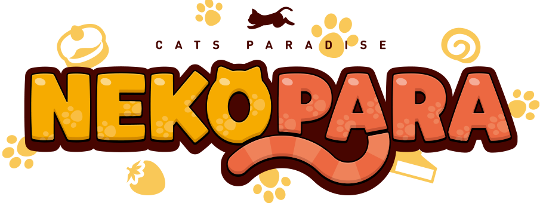

Welcome!
Nekopara
Personajes
~ Welcome to Vanilla Page~
Vanilla (バニラ Banira) es una gata inteligente y tranquila que ama a Chocola. Es la hermana gemela de Chocola y la más joven entre las gatas de Minaduki. Vanilla tiende a ser malinterpretada porque rara vez expresa sus emociones. De hecho, es bastante inteligente y a menudo hace observaciones notables. Su agudo ingenio y su actitud de "haré las cosas a mi manera" la convierten en el completo opuesto de Chocola. Sin embargo, sigue siendo de buen corazón y, bueno, como un gato.